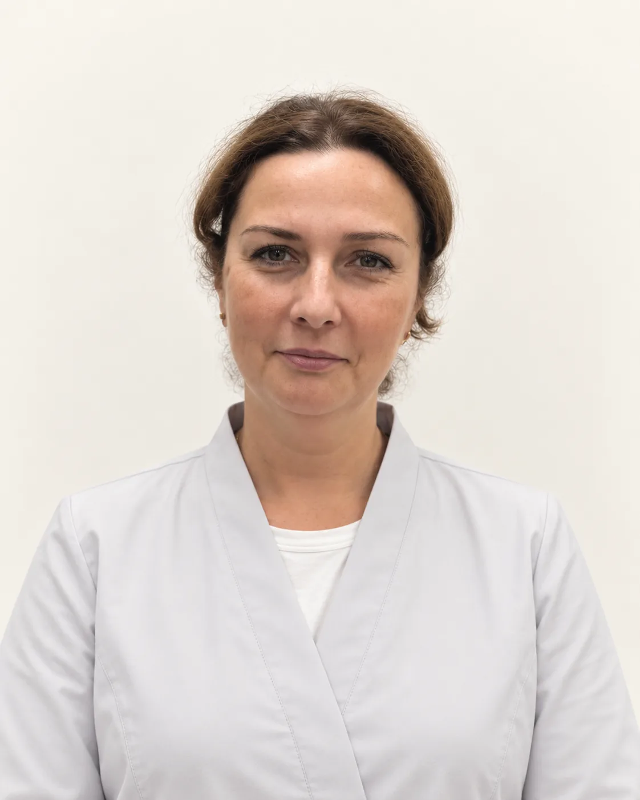

Косметология
Приём косметолога, уколы красоты, чистки и пилинги, аппаратные процедуры и лечение кожи.
21 услуга с ценами
Открыть разделУслуги
Все услуги клиники на одной странице: косметология, лазерная эпиляция, массаж, приёмы врачей, капельницы и анализы у метро «Римская».
Цены по прайсу клиники. Где написано «от», точную стоимость назовёт врач после осмотра. Приём ежедневно с 9:00 до 21:00.
У каждого направления и каждой процедуры своя страница. Нажмите на название, и откроется подробная страница:
Кожа и внешность
Приём косметолога, уколы красоты, чистки и пилинги, аппаратные процедуры и лечение кожи.
21 услуга с ценами
Открыть разделЛазерная эпиляция по зонам и комплексы: лицо, подмышки, бикини, ноги и руки.
5 услуг с ценами
Открыть разделТело
Медицинский массаж тела, спины и шейно-воротниковой зоны, курсы со скидкой.
2 услуги с ценами
Открыть разделАппаратная коррекция фигуры, вакуумный массаж и кавитация.
3 услуги с ценами
Открыть разделСамочувствие и лечение
Если непонятно, к какому врачу идти, начните с терапевта: осмотр, план обследования, чек-ап.
3 услуги с ценами
Открыть разделГоловная боль, головокружение, нарушения сна, онемение и боль в спине.
2 услуги с ценами
Открыть разделКапельницы по назначению врача, с учётом анализов и противопоказаний.
9 услуг с ценами
Открыть разделАнализы
Кровь берут в клинике, анализы выполняет лаборатория-партнёр. Срок готовности указан у каждого анализа.
13 услуг с ценами
Открыть раздел
КизликОльга Олеговна
Главный врач клиники
Если неясно, к какому специалисту идти, главный врач клиники поможет разобраться в запросе, выбрать специалиста и выстроить маршрут лечения внутри клиники.
Все услуги клиники с ценами по прайсу от 23.10.2026 собраны на одной странице, анализы лаборатории на отдельной.
Имеются противопоказания. Необходима консультация специалиста.